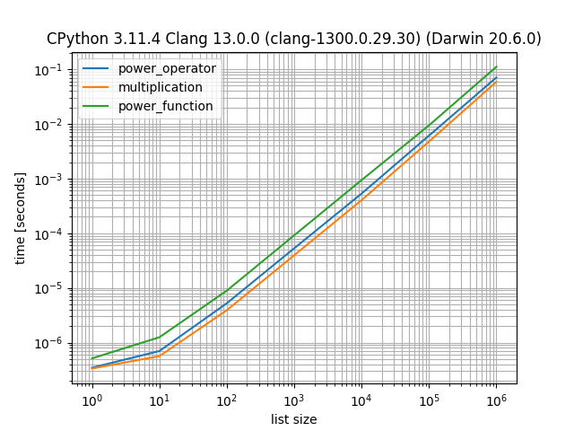

Benchmark Python with simple_benchmark
You can use the simple_benchmark library to benchmark and compare the execution time of two or more functions and how their behavior changes with changes to their input.
In this tutorial, you will discover how to use the simple_benchmark library for benchmarking in Python.
Let's get started.
What is simple_benchmark
The project simple_benchmark is a Python library for benchmarking.
It was developed by Michael Seifert and is available as open source on GitHub.
It offers the ability to both benchmark Python code and plot the results.
A simple benchmarking package including visualization facilities.
-- simple_benchmark, GitHub.
The project is specifically focused on comparing the execution of similar functions with different inputs.
For example, we may have two functions that perform the same task in different ways. We can compare the execution time of these functions with inputs ranging from small, medium, and large and compare the execution time of each.
This provides insight into how the execution time of each function scales with the size of inputs.
The goal of this package is to provide a simple way to compare the performance of different approaches for different inputs and to visualize the result.
-- simple_benchmark, GitHub.
As such, it assumes that the target functions will take longer to execute as the input to the functions is changed.
This might include:
- A larger integer input.
- A string with more content
- A list or array with more items.
The simple_benchmark provides a Python API and a command line interface, although at the time of writing the command line interface is experimental.
The command line interface is highly experimental. It's very likely to change its API.
-- simple_benchmark, GitHub.
In this tutorial, we will focus on using the simple_benchmark library via the Python API.
Now that we know about simple_benchmark, let's look at how we might use it for benchmarking.
How to Use simple_benchmark
Using the simple_benchmark library for benchmarking involves three steps, they are:
- Install simple_benchmark
- Benchmark Functions With Python API
- Review and Interpreter results.
Let's take a closer look at each in turn.
1. Install simple_benchmark
The first step is to install the simple_benchmark library.
This can be achieved using your favorite Python package manager, such as pip.
For example:
pip install simple_benchmarkThe simple_benchmark library makes use of NumPy, Pandas, and Matplotlib, therefore it is a good idea to install these libraries two, if not already installed.
For example:
pip install numpy
pip install pandas
pip install matplotlib2. Benchmark With Python API
Next, we can benchmark target functions using the simple_benchmark Python API.
This assumes that we have two or more functions that take the same inputs and whose execution time varies in proportion to the inputs.
Benchmarking involves calling the simple_benchmark.benchmark() function and passing at least three things:
- A list of function names to be benchmarked and compared.
- A dictionary of arguments of increasing size to be provided to each function when benchmarked.
- The name or names of each argument are provided.
For example:
...
# define functions to compare
functions = [...]
# define arguments
arguments = {...}
# define argument names
argument_names = '...'
# perform benchmark
results = simple_benchmark.benchmark(functions, arguments, argument_names)
We can also provide human-readable names for each function via an optional "function_aliases" argument.
For example
...
# define function aliases
aliases = [...]
# perform benchmark
results = simple_benchmark.benchmark(functions, arguments, argument_names, function_aliases=aliases)3. Review and Interpret Results
Once the benchmarking is complete we can report results.
The results object returned from the simple_benchmark.benchmark() function is a Pandas dataframe.
This dataframe can be reported directly, providing a table of benchmark results.
For example:
...
# report results
print(results)The dataframe can also be plotted as a line plot directly.
For example:
...
# plot results
results.plot()
# show the plot
matplotlib.pyplot.show()We can then review how the execution time of each function is varied with the input arguments.
Now that we know how to use the simple_benchmark library for benchmarking, let's look at a worked example.
Example of Benchmarking with simple_benchmark
We can develop an example to compare functions using the simple_benchmark library.
In this case, we will define three different functions that create a list of squared integers.
The three approaches are:
- Use the power operator (**)
- Use multiplication
- Use the math.pow() function
Each function creates a list that is defined by an input argument.
This means that the execution time of each function grows with the size of the list it creates, specified by the argument.
We can test each function with list sizes on a log scale from 1 to 1,000,000 (e.g. orders or magnitude or powers of 10x).
Firstly, we can define the three different functions for creating lists of squared integers.
# square using power operator **
def power_operator(size):
data = [i**2 for i in range(size)]
# square using multiplication operator *
def multiplication(size):
data = [i*i for i in range(size)]
# square with math.pow()
def power_function(size):
import math
data = [math.pow(i,2) for i in range(size)]
Next, we can define the parameters for benchmarking, including the list of functions, the arguments to benchmark, and the name of the argument.
...
# define functions to compare
functions = [power_operator, multiplication, power_function]
# define arguments
arguments = {i: i for i in [1, 10, 100, 1000, 10000, 100000, 1000000]}
# define argument names
argument_names = 'list size'We can then benchmark the three functions with the different sizes and gather the results.
...
# perform benchmark
results = benchmark(functions, arguments, argument_names)We can then report the dataframe of results.
...
# report benchmark results
print(results)Finally, we can create line plots of each function and show the growth in execution time in proportion to the increase in the size of the input argument.
...
# plot results
results.plot()
# show the plot
matplotlib.pyplot.show()Tying this together, the complete example is listed below.
# SuperFastPython.com
# example of comparing square functions with simple_benchmark
import matplotlib
from simple_benchmark import benchmark
# square using power operator **
def power_operator(size):
data = [i**2 for i in range(size)]
# square using multiplication operator *
def multiplication(size):
data = [i*i for i in range(size)]
# square with math.pow()
def power_function(size):
import math
data = [math.pow(i,2) for i in range(size)]
# define functions to compare
functions = [power_operator, multiplication, power_function]
# define arguments
arguments = {i: i for i in [1, 10, 100, 1000, 10000, 100000, 1000000]}
# define argument names
argument_names = 'list size'
# perform benchmark
results = benchmark(functions, arguments, argument_names)
# report benchmark results
print(results)
# plot results
results.plot()
# show the plot
matplotlib.pyplot.show()
Running the example defines and executes the benchmark.
It does not take long, perhaps 7 seconds on a modern system.
Next, the dataframe of results is reported.
We can see that each row shows the execution time with a different input argument to the target functions.
We can see that each column is a different function.
The results are in scientific notation because the execution times of the functions are very small. This can make it hard to interpret the results unless you are familiar with the notation.
The table shows that the numbers are becoming larger (small negative exponent) as the size of the argument is increased.
The benchmark results might be easier if the units and precision of was adjusted automatically so that decimal notation was used. Additionally, it would be helpful if the number of repetitions of each benchmark could be increased and summed, allowing for larger numbers that could be directly compared.
power_operator multiplication power_function
1 3.482958e-07 3.338322e-07 5.229602e-07
10 7.059773e-07 5.778957e-07 1.217493e-06
100 5.237238e-06 3.857909e-06 8.910801e-06
1000 5.342602e-05 3.962649e-05 9.224191e-05
10000 5.237029e-04 3.925371e-04 9.240471e-04
100000 5.946564e-03 4.701418e-03 9.395551e-03
1000000 6.982702e-02 5.924495e-02 1.108105e-01
Next, the results are plotted.
The x-axis shows the input argument increase on a log scale.
The y-axis shows the change in execution time in seconds.
All three functions show the same general trend of increasing execution time with the increase in argument size.
In all cases we can see that the multiplication function has the lowest time, followed by the power operator, and then the math.pow() function that is the slowest for each input argument.

Takeaways
You now know how to use the simple_benchmark library for benchmarking in Python.